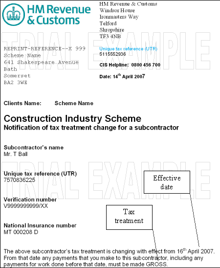

If the tax treatment of a matched subcontractor changes, you will receive from HRMC a CIS 316. In this case, create a new verification record for the subcontractor, and enter the Verification Status as "Matched", and the tax treatment,
NOTE

CIS 316 ? Notification of tax treatment change for a subcontractor